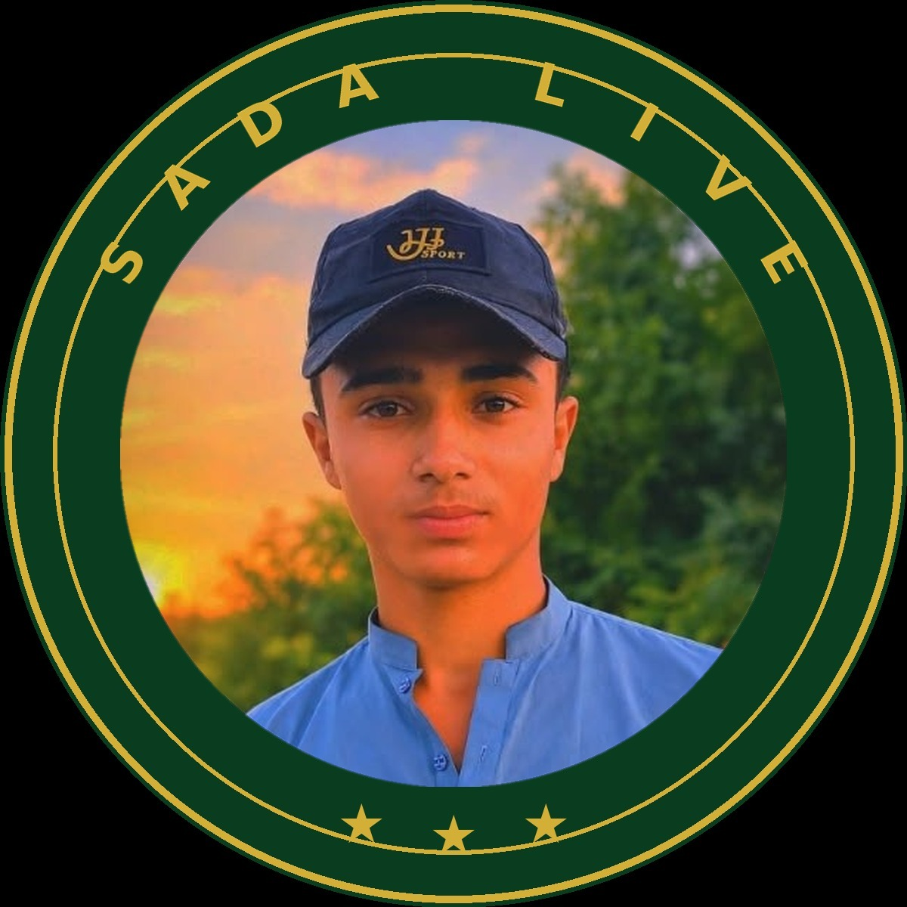
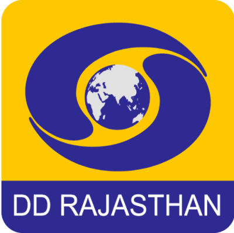
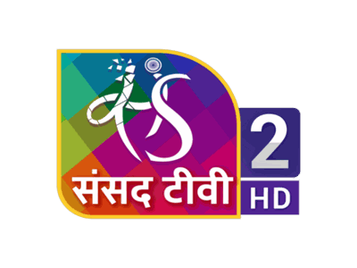

محـــمد رحـــیم چـانــڈیــو
Muhammad Raheem Chandio
Hijri Date: Loading…
Open your browser menu and choose Add to Home Screen / Install App.
براؤزر مینو کھولیں اور Add to Home Screen / Install App منتخب کریں۔
بِسْمِ اللَّهِ الرَّحْمَٰنِ الرَّحِيمِ
اللّٰهُمَّ صَلِّ عَلٰى مُحَمَّدٍ وَّعَلٰى آلِ مُحَمَّدٍ

Muhammad Raheem Chandio
Hijri Date: Loading…
Live Clock · Kotri, Jamshoro
--:--:--
Loading prayer times…
Masjid Scene
Weather · Kotri, Jamshoro
Loading weather…
Live — Open-Meteo
Choose a section to begin
In-site AI chat and image generation require server hosting and are not available in this version. The cards above open each provider’s official service in a new tab.
بِسْمِ اللّٰهِ الرَّحْمٰنِ الرَّحِيْمِ
مستند تلاوت — rights-holders کی uploads
مکمل قرآن کی authorized recordings دستیاب نہیں — صرف درج ذیل مستند excerpts شامل ہیں۔
تلاوت: قاری شاکر قسمی • اردو آواز: سلیم الدین شمسی • اردو ترجمہ: فتح محمد جالندھری
حیثیت: اجازت زیرِ التواء — حقوق کے حاملین (rights-holders) سے تحریری اجازت ملتے ہی یہاں مکمل قرآن کی 30 پاروں پر مشتمل سیریز شائع ہوگی۔
اجازت کی درخواست صرف اس ویب سائٹ پر مفت عوامی streaming (غیر تجارتی) کے لیے ہے۔ Download صرف اس صورت میں شامل ہوگا اگر اس کی الگ سے اجازت ملے۔
دیانتدارانہ نوٹ: فی الحال یہاں کوئی آڈیو نہ hosted ہے اور نہ کسی بیرونی ویڈیو کا link دیا گیا ہے — ابھی سننے کے لیے کچھ بھی موجود نہیں۔
یہ اردو تعلیم اور علمی ذخیرے کا حصہ ہے — قرآن، حدیث اور اسلامی کتب یہیں سے پڑھیں۔ هي سنڌي تعليم ۽ علمي ذخيري جو حصو آهي — قرآن، حديث ۽ اسلامي ڪتاب هتان پڙهو۔
Loading news…
These channels play on Tamasha's own official platform (Jazz / Beyond Digital). SADA PORTAL has requested embedding permission and is awaiting a reply — until written permission is granted, no Tamasha streams are hosted here. Watch via the official channel links below.
 FREE
FREE
 FREE
FREE
Same channels on backup servers. If a main stream stops, try the Server 2 version here.
 FREE
FREE

DR'">FREE
ST'">FREEOfficial Indian news channels. Watch on their official websites or YouTube.
Government public broadcasters. Watch on their official websites.
Official OTT: Waves (wavespb.com) — free, login required
Official Portal: ptv.com.pk
Official YouTube channels & websites. No free 24/7 live TV stream exists for these pay-TV channels.
Official broadcasters. Watch on their official websites.
Islamic TV channels. Watch on their official websites or YouTube.
Please note: In-site AI chat and image generation require server hosting and are not available in this version. This page is a directory of official AI services. Nothing here is a copy or unofficial mirror — tap a card to use the provider’s real service.
بِسْمِ اللّٰهِ الرَّحْمٰنِ الرَّحِيْمِ
القرآن الكريم
AL QURAN KAREEM
قرآن لائبریری لوڈ ہو رہی ہے…
نہج البلاغہ حضرت علی ابن ابی طالب علیہ السلام کے خطبات، مکتوبات اور اقوال کا مجموعہ ہے، جسے سید رضیؒ نے مرتب کیا۔ یہاں اس کے مستند اردو اور سندھی تراجم کے اصل آن لائن ذرائع دیے گئے ہیں — ہر کتاب اپنے اصل ماخذ پر پڑھی جاتی ہے۔
اردو ترجمہ: علامہ مفتی جعفر حسین · ناشر: المعارج کمپنی، لاہور (Al-Miraj Company, Lahore — 2003)
پوری نہج البلاغہ — خطبات، مکتوبات اور اقوال ایک ہی جگہ
حضرت علیؑ کے مکتوبات اور خطوط
balagha.app پر کھلنے کے بعد زبان کے مینیو سے «اردو (مفتی جعفر حسین)» منتخب کریں۔ اردو PDF کے پرانے ڈاؤن لوڈ لنکس اب ختم ہو چکے ہیں، اس لیے اردو کے لیے صرف آن لائن پڑھنے اور اصل ماخذ کے بٹن دیے گئے ہیں۔
سنڌي ترجمو: المجتبیٰ فائونڊيشن، سنڌ، پاڪستان
سڄي نهج البلاغه — خطبا، خط ۽ قول · 1042 صفها
حضرت عليؑ جا خطبا — مڪمل ڪتاب جي PDF مٿي واري ڪارڊ ۾ آهي۔
حضرت عليؑ جا خط (مڪتوبات) — مڪمل ڪتاب جي PDF مٿي واري ڪارڊ ۾ آهي۔
حضرت عليؑ جا قول ۽ حڪمتون — مڪمل ڪتاب جي PDF مٿي واري ڪارڊ ۾ آهي۔
balagha.app تي ٻوليءَ واري مينيو مان «سنڌي» چونڊيو۔ PDF صرف مڪمل ڪتاب جو آهي (1042 صفها) ۽ اصل ماخذ تان ئي ڊائون لوڊ ٿيندو۔
الحديث
HADITH
No book matches your search.
🔒 Read Online only — no verified legal download file is attached to these Hadith books.
Nahj al-Balagha: Urdu and Sindhi only — no English edition is added without a verified legal source.
Loading the music directory…
Paste a link — only real authorized downloads, never ripping
محـــمد رحـــیم چـانــڈیــو
Muhammad Raheem Chandio
Founder — Sada Portal
Sada Portal brings together official, free live television and radio from around the world in one place — alongside the Quran, hadith, prayer times and useful official services. Every channel listed here plays only via the broadcaster’s own official embed or stream, or links to the broadcaster’s official player.
خوش آمدید! صدا پورٹل میں آپ کو آفیشل لائیو ٹی وی، ریڈیو اور قرآن و حدیث ایک ہی جگہ ملتے ہیں۔ ڀليڪار! صدا پورٽل ۾ توهان کي سرڪاري لائيو ٽي وي، ريڊيو ۽ قرآن و حديث هڪ ئي هنڌ ملن ٿا۔
© 2026 Muhammad Raheem Chandio. All rights reserved. Unauthorised copying, cloning or redistribution of this website’s original design and content is prohibited.
This license covers Sada Portal’s original design, layout, code and editorial content created for this site. Third-party broadcasts, texts, audio, fonts and data remain the property of their respective owners and are credited below.
Only the sources this site actually uses are listed below. Where a public-domain or openly licensed text exists, the site may show it in full; otherwise it links to the official source and does not reproduce the text.
Sada Portal does not host pirated streams and does not copy, re-host or restream any broadcaster’s signal. Where a channel allows embedding, it plays here through that official embed; where a channel blocks embedding, Sada Portal does not force a player — it links you to the channel’s official player or official YouTube live stream instead.
صدا پورٹل کوئی غیر قانونی اسٹریم میزبانی نہیں کرتا۔ جو چینل ایمبیڈ کی اجازت نہیں دیتا، اس کے لیے یہاں زبردستی پلیئر نہیں لگایا جاتا — آپ کو اس کے آفیشل پلیئر یا آفیشل یوٹیوب لائیو کی طرف بھیجا جاتا ہے۔ صدا پورٽل ڪا غير قانوني اسٽريم ميزباني نٿو ڪري۔ جيڪو چينل ايمبيڊ جي اجازت نٿو ڏئي، ان لاءِ هتي زبردستي پليئر نٿو لڳايو وڃي — توهان کي ان جي سرڪاري پليئر يا سرڪاري يوٽيوب لائيو ڏانهن موڪليو ويندو آهي۔
The broadcaster does not allow their website inside other pages. Use the button below to open their official site.
Open official site ↗The station is currently off-air.
Please try again later.